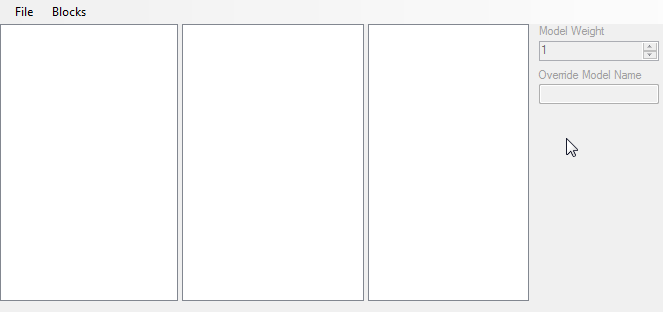
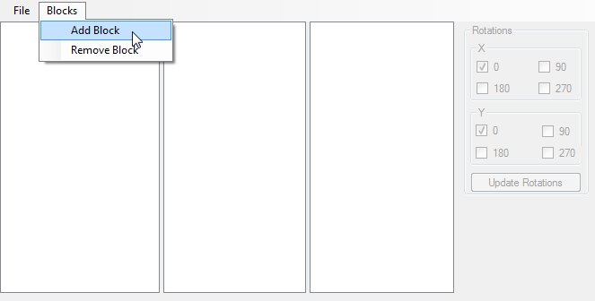
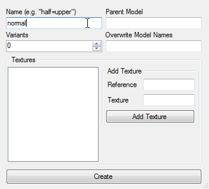
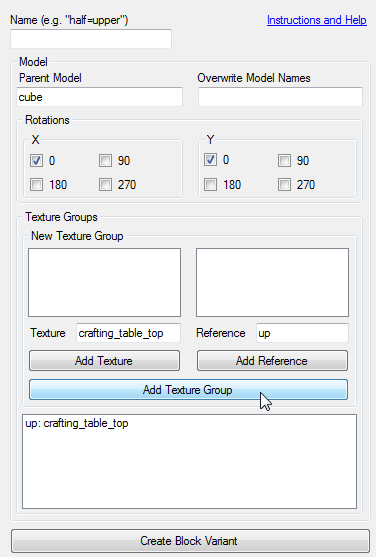
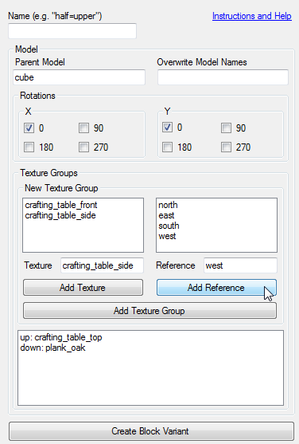
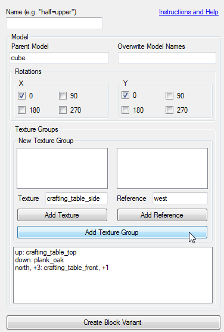
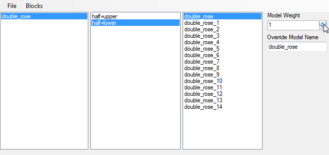
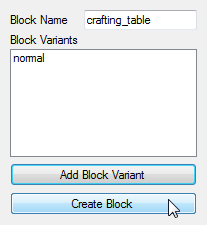
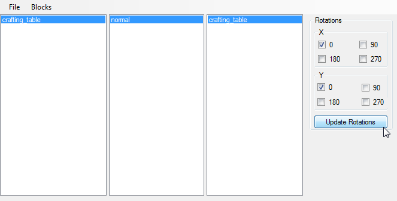

On A Theme JSON Generator
Making texture variations in Minecraft is annoying. It's a lot of tedious work, which includes copying and pasting files, only to edit a couple of things, then repeat it.
I made this to make that process a little easier. The JSON generator handles a lot of this for you, with plans to be able to do a most of the process for you.
Usage
Upon opening the program, it should look something like the screenshot below:
To add and remove block from the pack, you need to use the "Blocks" menu. Click the option to add a new block.
A new window will pop up, and will ask for a block name. For this example, I'm going to use a rose bush. As you can see, I've filled in crafting_table as the Block Name. This must be the name that is used by the game. Once you've done that, click "Add" to add a variant of this block.
Yet another window will appear. Looks complicated, I know. Don't worry, it's not that bad.
Fill in the top textboxes. Since the crafting table is based off the cube mode, I've specified that as the parent. I'm also going to overwrite the model names to say crafting_table, otherwise they will be created as cube>, and if you're not careful you may end up with some conflicts.
Now we need to make the textures.
In the "Texture" textbox I've typed crafting_table_top. Click "Add Texture".

Now we need to set the reference. This is the string that the game uses to put the texture onto the right face of the model. In this case, we want up. Click "Add Reference".
Since that's al we want for this face, click "Add Texture Group". It should now look like the screenshot below.
You don't have to specify one texture per face, or only one face per texture. If you give it more, it will go through and create variations for all of the possible combinations.
Here I've given the 4 sides of the block the option of the "front" or the "side" textures. This will create every combination, from every side being "front", to every side being "side, and everything inbetween.
When added as a Texture Group, only the first items are displayed in the text. The rest are hidden behind a number.
Now all we need to do is create that Block Variant.
You will now see the "normal" variant in this listbox. As we didn't specify a variant name, it defaulted to "normal". Click "Create Block".
By navigating through the listboxes, you can update the rotations of the block. As more features are added, more options will be available. Be sure to click "Update Rotations", otherwise your changes will not be used.
The final thing to do is create the files. In the file menu, click "Create UnZipped". This will create a new folder called OaT in the same directory as the .exe for this program. Inside will be all of the model and blockstate files.